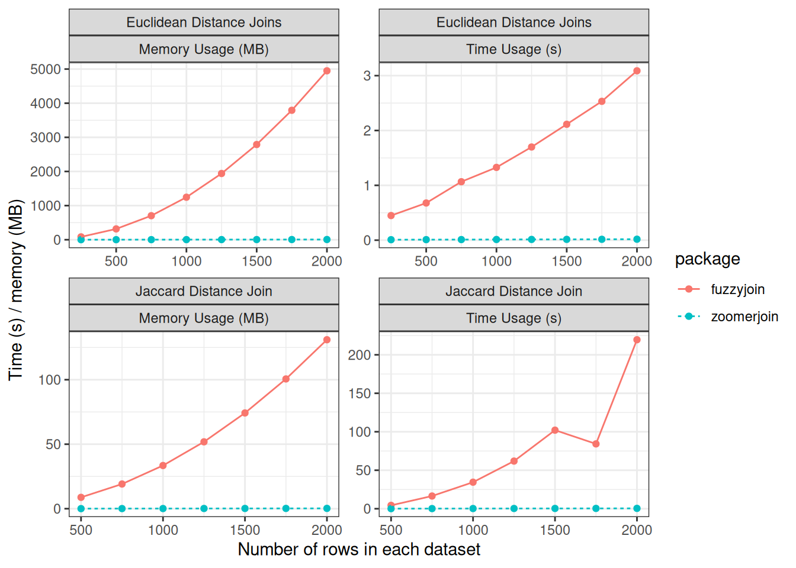

Introducing Zoomerjoin
If you work with large-scale social-science data, you are likely familiar with the concept of “fuzzy” merging datasets, or joining in a way that is robust to minor misspellings or corruptions in the keys used to identify observations between datasets. Fuzzy merging allows you to merge data even when fields have been inconsistently recorded or misspelled, as is common with large-scale administrative data.
However, there’s a catch: almost all popular fuzzy merging software packages involve comparing all possible pairs of records between two datasets, meaning they do not scale to realistically-sized datasets. In this post, I introduce my new R package, Zoomerjoin, empowers you to fuzzily join datasets in linear time, allowing you to fuzzy join larger datasets than ever before.
If you’d like to read a slightly more detailed and technical introduction to the package, please check out the article introducing the package in the Journal of Open Source Software here
Background:
Fuzzy matching is typically taken to mean identifying all pairs of observations between two datasets that have distance less than a specified threshold. Existing fuzzy-joining methods in R do not scale to large datasets as they exhaustively compare all possible pairs of units and recording all matching pairs, incurring a quadratic \(\mathcal{O}(mn)\) time cost. Perhaps worse, the most widely-used software packages typically also have a space complexity of \(O(mn)\), meaning that a patient user cannot simply wait for the join to complete, as the memory of even large machines will be quickly exhausted (Robinson 2020 ).
Zoomerjoin solves this problem by implementing two Locality-Sensitive Hashing algorithms (Broder 1997; Datar et al. 2004) which sort observations into buckets using a bespoke hash function which assigns similar entries the same key with high probability, while dissimilar items are unlikely to be assigned the same key. After this initial sorting step, the algorithm checks pairs of records in the same bucket to see if they are close enough to be considered a match. Records in different buckets are never compared, so the algorithm takes \(O(\max_{ij}{(m_i n_j)})\) time to run (time proportional to the size of the largest hash bucket). In the ordinary case that each observation matches to few points in another dataset, the running time is dominated by the hashing step, and the program finishes in linear time using linear memory.
How to use
If you are familar with the dplyr-style logical joins (such as inner_join),
you are already familiar with the syntax of Zoomerjoin. Zoomerjoin supports
fuzzy joining for two distance measures, the Jaccard distance measure (for text
data), and the Euclidean distance (for points or vectors). You can perform a
fuzzy-join using these distance metrics, you can use jaccard_(operation)_join
or euclidean_(operation)_join respectively.
Here’s an example showing how to merge two datasets using the
jaccard_inner_join function. I use as test datasets two random subsets
political donors listed in the Database on Ideology, Money in Politics, and
Elections (DIME) (the same test set from
benchmark from this paper).
To give you a sense of the data, here’s the first ten rows of the first sample:
corpus_1 <- dime_data %>% # dime data is packaged with zoomerjoin
head(5*10^5)
names(corpus_1) <- c("a", "field")
corpus_1## # A tibble: 500,000 × 2
## a field
## <dbl> <chr>
## 1 1 ufwa cope committee
## 2 2 committee to re elect charles e. bennett
## 3 3 montana democratic party non federal account
## 4 4 mississippi power & light company management political action and educ…
## 5 5 napus pac for postmasters
## 6 6 aminoil good government fund
## 7 7 national women's political caucus of california
## 8 8 minnesota gun owners' political victory fund
## 9 9 metropolitan detroit afl cio cope committee
## 10 10 carpenters legislative improvement committee united brotherhood of car…
## # ℹ 499,990 more rowsAnd the first ten rows of the second sample:
corpus_2 <- dime_data %>% # dime data is packaged with zoomerjoin
tail(5*10^5)
names(corpus_2) <- c("b", "field")
corpus_2## # A tibble: 500,000 × 2
## b field
## <dbl> <chr>
## 1 832471 avrp studios inc
## 2 832472 avrd design
## 3 832473 avenales cattle co
## 4 832474 auto dealers of michigan political a
## 5 832475 atty & counselor at law
## 6 832476 at&t united way
## 7 832477 ashland food & liquors
## 8 832478 arvance turkey ranch inc
## 9 832479 arizona federation of teachers
## 10 832480 arianas restaurant
## # ℹ 499,990 more rowsI want to find matching rows or donors between the two tables, but even after
standardization, that the same donor may be spelled or recorded differently in
each dataset, so fuzzy joining is necessary. I use the jaccard_inner_join
function to find matching rows between the two samples:
start_time <- Sys.time()
join_out <- jaccard_inner_join(corpus_1, corpus_2,
by = "field",
threshold = .9, n_gram_width=6,
n_bands=40, band_width=6)
print(Sys.time() - start_time)## Time difference of 10.23653 secsselect(join_out, field.x, field.y) %>%
mutate_all(~substr(.x,1,30))## # A tibble: 7,803 × 2
## field.x field.y
## <chr> <chr>
## 1 "operating engineers local no 3" "operating engineeers local no "
## 2 "goode casseb jones riklin choa" "goode casseb jones riklin choa"
## 3 "texas farm bureau," "texas farm bureau"
## 4 "liuna local 1309" "liuna local 130"
## 5 "friends of steve fryar" "friends of steve fryar,"
## 6 "53b house district republican " "55b house district republican "
## 7 "4th district democratic centra" "26th district democratic centr"
## 8 "the holman law firm p.c." "the holman law firm p.c.,"
## 9 "teamsters local 813" "teamsters local 81"
## 10 "hotel employees & restaurant e" "hotel employees & restaurant e"
## # ℹ 7,793 more rowsThe join finishes in just a few seconds on a modern data science laptop, and uses very little memory, even though a brute-force comparison of all pairs would involve \(2.5^{11}\) operations! You can see a more detailed example of this vignette and more of what you can do with zoomerjoin in the introductory vignette, and package README.
Benchmarks
How much time can zoomerjoin save you? The de facto standard for fuzzyjoining
is the venerable fuzzyjoin package which implements fuzzy joins for a panoply
of distance metrics. The package’s most commonly used fuzzy joins, those for
the string distance are backed by optimized C code used to compare the strings.
However, fuzzyjoin runs an exhaustive search between all pairs of
observations between each dataset, it has to perform an increasing amount of
work for each additional row it seeks to merge, and hence does not scale to
large datasets.
Below, I compare the performance of fuzzyjoin to zoomerjoin when matching
datasets for the two distance metrics supported by zoomerjoin.

Zoomerjoin achieves almost linear scaling in both runtime and memory, while
fuzzyjoin scales quadratically. Even for datasets with 2500 rows,
zoomerjoin finishes in under a second. By contrast, the Jaccard-distance
joins implemented in fuzzyjoin take over three minutes to join. For the
largest Euclidean datasets, fuzzyjoin almost exhausts the 8GB memory capacity
of the laptop used for benchmarking, while zoomerjoin’s memory rises above
above 8 MB — a thousand-fold decrease1.
Of course, zoomerjoin isn’t better for every task; it supports fewer distance
metrics, as well as other types of joins such as regex joins, and joins for
genomic data. Additionally, fuzzyjoin does not use Rust, so it is easier to
deploy on most systems, and will be available on more systems.
Use Zoomerjoin For Blocking:
In many cases, a single distance metric will not be sufficient to distinguish matches from non-matches. As an example, it might be that multiple fields are needed to conclusively identify matches, or you might need to combine multiple string-distance metrics to properly distinguish different spellings of the same identifier from similar yet distinct identifiers.
Zoomerjoin can’t do this itself, but it can drastically cut down on the time needed to perform such matching by acting as a pre-processing step. To do this, you can have Zoomerjoin return all pairs that are remotely similar, and then distinguish between matches and non-matches using a bespoke model. I can’t scoop some of the work I’m doing currently, but I can share that I have used Zoomerjoin as a pre-processing step to a machine-learning model to find credible matches in datasets with hundreds of millions of rows in a matter of minutes.
Bibliography
I am not entirely sure that all of zoomerjoin’s memory usage is being captured in this benchmark, due to difficulties of measuring the memory used by both R and Rust parts of the implimentation. The qualitative conclusions aren’t senstive to this however: zoomerjoin can join datasets with millions or hundreds of millions of rows while using a realistic amount of memory.↩︎